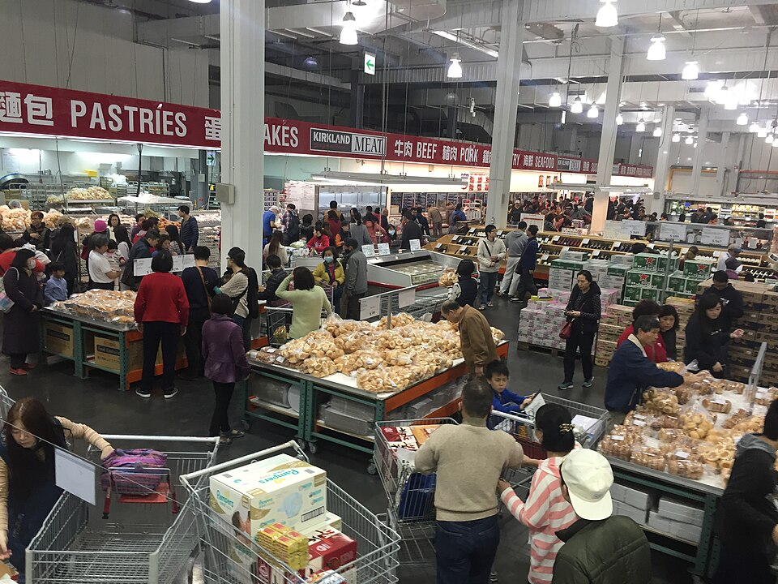

설립연도
1983년

연회비를 낸 회원만 들어갈 수 있는 창고형 할인점이에요. 상품 수를 줄이고 대용량으로 싸게 팔며, 상품에서는 이익을 적게 남기는 대신 회원들의 연회비가 이익의 큰 부분을 차지해요. 전 세계에 939개 매장이 있고 한국에도 매장이 있어요. 2026 회계연도(8월 말 끝) 매출은 3,032억 달러였어요.
칸에 마우스를 올리거나 누르면 자세한 설명을 볼 수 있어요.
과자·음료·생수·세제 같은 식품과 생활용품을 대용량으로 싸게 팔아요. 매출에서 가장 큰 부분이에요.
대표 예가공식품, 음료, 생활용품, 커클랜드 시그니처
고기, 빵, 과일·채소 같은 신선식품을 팔아요. 매장에서 직접 굽는 빵과 로티세리 치킨이 유명해요.
대표 예정육, 베이커리, 농산물

TV·노트북 같은 가전, 가구, 의류, 타이어 등 식품이 아닌 상품을 팔아요.
대표 예가전, 가구, 의류, 타이어
매장 옆 주유소, 약국, 안경점과 연회비가 있어요. 연회비는 매출에서는 작지만 이익에서는 큰 비중을 차지해요.
대표 예주유소, 약국, 골드스타·이그제큐티브 회원
원화 금액은 1달러 = 1,334.9원(2026년 11월 27일 유럽중앙은행 기준환율)으로 환산한 대략적인 값이에요.
| 기간 | 매출 | 영업이익 | 순이익 |
|---|
사업마다 겨루는 상대가 달라요